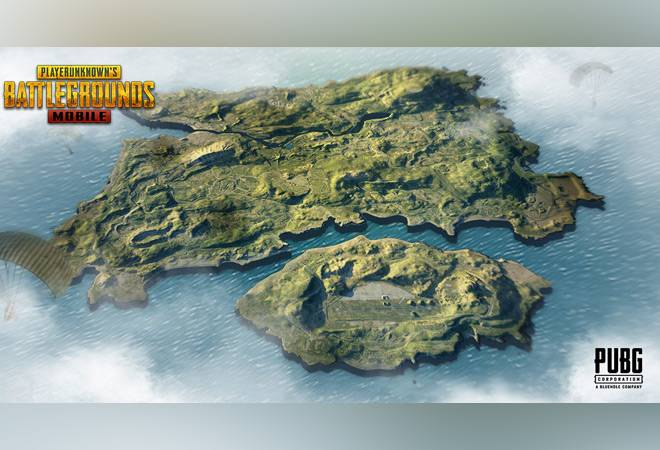
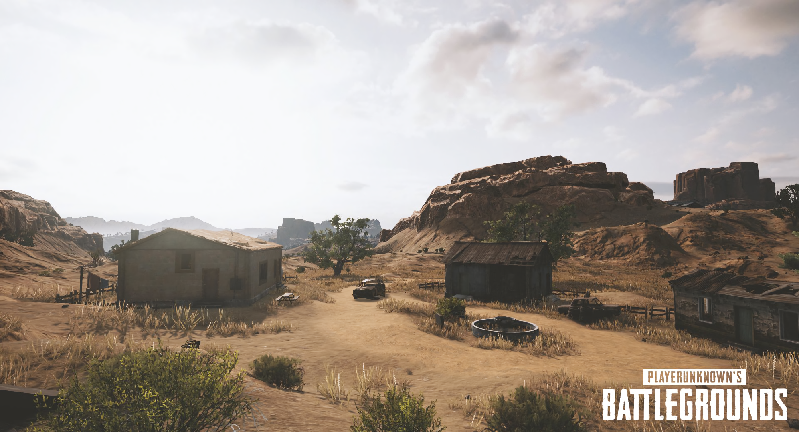
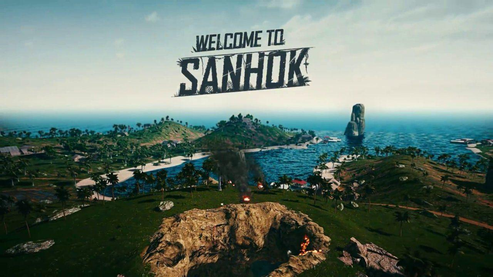
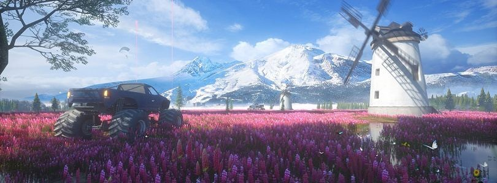

erangle
{kind=link}
Erangle is the first playable map introduced in PlayerUnknown's Battlegrounds. It is Soviet-era themed with several points of interest. Points from the map that are not mentioned below generally do not contain anything of high value. Areas noted as high in popularity tend to have more player interactions, with the upside of containing higher quality equipment and potentially easier access to vehicles. Newer players may want to focus on areas that are low in popularity; though the equipment quality is lower, it allows them to adapt to the terrain and get a feel for the game. Erangle is a fictional island in the black sea abandoned near Russia where a military occupation was controlling it. The military occupation tested chemical/biological experiments on the local populace. After a resistance attack on a biological facility, the island had to be abandoned. Erangle was originally occupied by Soviet forces from the 1950s onwards and was used as a military testing facility, which explains the military base as well as the hospital and storage facilities. A local resistance movement fought to reclaim the island which eventually lead to the island becoming abandoned. The electrical field seen wreaking havoc on the island is powered by electrical emitters which were used to contain towns that were showing signs of revolting against the Soviet forces
miramar
{kind=link}
Miramar offers unique terrain and dense urban areas. With an island to the south east home to a prison and smaller villages, the entire area is cut off from the west and north-east by enormous canyons and mountains, with a looming metal wall to the north keeping outsiders out, and players in. Miramar will create a new Battle Royale experience where the old strategies from Erangel may no longer work and new tactics are required.
Miramar is a city-centric map based in Mexico.
As far as its general characteristics go, the main thing to note about Miramar is that it's open, far more so than the Erangel map - although it's open in a different way to what many people seem to think.
One of the main complaints players have had about Miramar is that it feels too open because of the lack of cover. That's not necessarily true - there may be slightly less cover than Erangel, but more cover has been added in patches over time - and we think that it's more a case of Miramar feeling open because of the differences in line of sight that it has with Erangel.
The one thing that really sets the two apart is the excess of trees in Erangel. They provide pretty poor cover, but a handful of trees dotted around fairly open fields is enough to drastically alter line of sight to snipers and people scoping out the plains for crossing players.
Whilst Miramar might have plenty of cover that's actually better at protecting you than trees, such as the undulating terrain itself, it's the fact that you can see so far, and so clearly, that makes you feel so vulnerable when you're traversing it.
vikendi

As far as its general characteristics go, the main thing to note about Miramar is that it's open, far more so than the Erangel map - although it's open in a different way to what many people seem to think.
One of the main complaints players have had about Miramar is that it feels too open because of the lack of cover. That's not necessarily true - there may be slightly less cover than Erangel, but more cover has been added in patches over time - and we think that it's more a case of Miramar feeling open because of the differences in line of sight that it has with Erangel.
The one thing that really sets the two apart is the excess of trees in Erangel. They provide pretty poor cover, but a handful of trees dotted around fairly open fields is enough to drastically alter line of sight to snipers and people scoping out the plains for crossing players.
Whilst Miramar might have plenty of cover that's actually better at protecting you than trees, such as the undulating terrain itself, it's the fact that you can see so far, and so clearly, that makes you feel so vulnerable when you're traversing it.
As far as its general characteristics go, the main thing to note about Miramar is that it's open, far more so than the Erangel map - although it's open in a different way to what many people seem to think.
One of the main complaints players have had about Miramar is that it feels too open because of the lack of cover. That's not necessarily true - there may be slightly less cover than Erangel, but more cover has been added in patches over time - and we think that it's more a case of Miramar feeling open because of the differences in line of sight that it has with Erangel.
The one thing that really sets the two apart is the excess of trees in Erangel. They provide pretty poor cover, but a handful of trees dotted around fairly open fields is enough to drastically alter line of sight to snipers and people scoping out the plains for crossing players.
Whilst Miramar might have plenty of cover that's actually better at protecting you than trees, such as the undulating terrain itself, it's the fact that you can see so far, and so clearly, that makes you feel so vulnerable when you're traversing it.
Vikendi is a map based on an isolated Northern resort island on the Adriatic Sea.
Other
Vikendi being on the Adriatic Sea is contradicted by the fact that the entire coastline of the Adriatic Sea reaches a yearly minimum temperature of ~12 °C, way too far from the snow limit of 0 °C. The Slovenian and italian northern coast is also warm and mountainless, with the mountains rising deeper inland. A much more feasible place for an island like this would be the North Sea, the Baltic Sea, or the Barents Sea in spring or fall.
sanhok
{kind=link}
Sanhok is the first map that the art team of PUBG Corp visited a location specifically for world art development. By physically being in the jungles and mountains in a humid Asian country, it not only made them imagine what the new map will play like, but they felt the breeze, smelled the air and heard the sounds. All of these experiences are helping the team create a unique map experience.
The map is inspired by a wide variety of islands in Thailand and the Philippines, the PUBG Art team; comprised of Technical Artists, Concept Artists and 3D Environment Artists, they took photos (Photogrammetry) to capture the island then transfer that to the game engine to design Sanhok.
Development on this map began sometime in 2017 [1] and in March of 2018, PC Gamer had the privilege to announce/reveal the map [2]. A month later PUBG Corp created a new standalone client called "PUBG: Experimental Server" just to test Sanhok on April 2nd, 2018. The client at first an invite only client (where you needed a key in order to download the client), mostly only content creators and PUBG Partners had access to it and due to uproar within the community, PUBG Corp later on opened it up to all owners of PUBG on Steam. Codename: Savage consisted of 4 rounds of testing phases in the Experimental client to take out any performance hitting bugs, glitches and even optimizing the map better. Later that Summer on June 22nd, 2018 it went to the live client on PC and then on September 4th, 2018 (launch of 1.0) it got released for Xbox One.
livik
{kind=link}
livik map, the all-new battle royale map that will be exclusive to the mobile version of PUBG is dropping starting today. Set on the Nordic scenery, the new Livik map is part of the 0.19.0 update that's now available for Android and iOS users.
What is Livik map in PUBG Mobile?
The Livik map is the smallest in the PUBG Mobile game and has a size of 2-by-2 kilometres. Livik allows 52 members to participate for a 15 minutes per match gameplay.
Livik brings map-exclusive gear and vehicles, including the P90 sub-machinegun, Mk12 marksman rifle and Monster Truck vehicle. Notably, the map is still in its Beta stage and will be updated to improve the gameplay.